Con la linear regression possiamo fare previsioni creando un modello avendo una variabile indipendente(x) ed una
variabile dipendente(y). La formula è la seguente :
Y = a + bX
per cui inserendo un valore per la varibile x automaticamente otteniamo la previsione di y.
Per ottenere un modello abbiamo a disposizione molti metodi e qui prenderemo in considerazione i più importanti.
I modelli che saranno creati ci permetteranno di predire il prezzo delle case a Taiwan in base al report seguente fornito da :
Yeh, I. C., & Hsu, T. K. (2018). Building real estate valuation models with comparative approach through case-based reasoning. Applied Soft Computing, 65, 260-271.
I dati sono inerenti :
The market historical data set of real estate valuation are collected from Sindian Dist., New Taipei City, Taiwan.
I dati in input sono :
X1=the transaction date (for example, 2013.250=2013 March, 2013.500=2013 June, etc.)
X2=the house age (unit: year)
X3=the distance to the nearest MRT station (unit: meter)
X4=the number of convenience stores in the living circle on foot (integer)
X5=the geographic coordinate, latitude. (unit: degree)
X6=the geographic coordinate, longitude. (unit: degree)
output :
Y= house price of unit area (10000 New Taiwan Dollar/Ping, where Ping is a local unit, 1 Ping = 3.3 meter squared)
Dopo aver importato le librerie passiamo a preparare il file con i dati di input.
import numpy as np
import matplotlib.pyplot as plt
import pandas as pd
from sklearn.model_selection import cross_val_score
from sklearn.metrics import classification_report , plot_confusion_matrix , confusion_matrix
from sklearn.impute import SimpleImputer
from sklearn.preprocessing import StandardScaler
from sklearn.decomposition import PCA
from sklearn.model_selection import train_test_split
from sklearn.metrics import mean_squared_error, r2_score
from sklearn.linear_model import LinearRegression
%matplotlib inline
data = pd.read_csv('/content/drive/MyDrive/dati/Real estate valuation data set.csv')
Sotto un estratto del file caricato nel dataframe data.
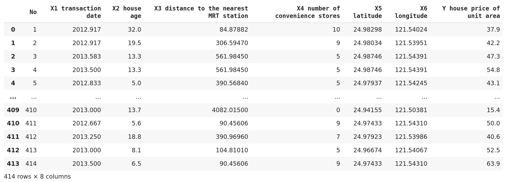
Nel dataframe in caso di campi vuoti inseriamo degli zeri.
sistemavuoti = SimpleImputer(missing_values=np.nan, strategy='constant', fill_value=0)
sistemavuoti.fit_transform(data)
Estrazioni dei dati dal dataframe con x - dati in input e y - dati in output
X = data.iloc[:,1:-1]
y = data.iloc[:,-1]
Creazione del training set e del test set. Con pca selezioniamo quale è il parametro con maggiore
correlazione con l'output poi per agevolare i calcoli si scala training e test set si individua nome
della colonna selezionata per l'input.
x_train, x_test, y_train, y_test = train_test_split(X, y, test_size = 0.2, random_state = 0)
pca = PCA(n_components=1)
pca.fit(x_train)
x_train = pca.transform(x_train)
x_test = pca.transform(x_test)
sc = StandardScaler()
x_train = sc.fit_transform(x_train)
x_test = sc.fit_transform(x_test)
headerI = [ x for x in X.columns ] # header input
comp = pca.n_components_
index_comp = [np.abs(pca.components_[i]).argmax() for i in range(comp)]
# cerco index columns selezionata
input = headerI[index_comp[0]]
LINEAR REGRESSION
reg = LinearRegression()
reg.fit(x_train,y_train)
y_pred = reg.predict(x_test)
y_test1 = y_test.astype(float)
y_test1.dtype
color = [ 'red']
title = {'fontsize': 20 ,
'color' : 'blue',
'verticalalignment': 'baseline',
'horizontalalignment': 'center'}
reg.score
print('Coefficients: ', reg.coef_, '\n')
print('Mean squared error: %.2f' % mean_squared_error(y_test, y_pred), '\n')
print('Coefficient of determination(R2 score): %.2f' % r2_score(y_test, y_pred), '\n')
# Plot
plt.scatter(x_test,y_test, color= color )
plt.plot(x_test, y_pred, 'b+' , linewidth=1)
plt.title('House Price Prediction', fontdict=title )
plt.xticks([x_test.min(),x_test.mean(),x_test.max()])
plt.yticks([y.min(),y.mean(),y.max()])
plt.xlabel(input)
plt.ylabel(data.columns[-1])
plt.show()
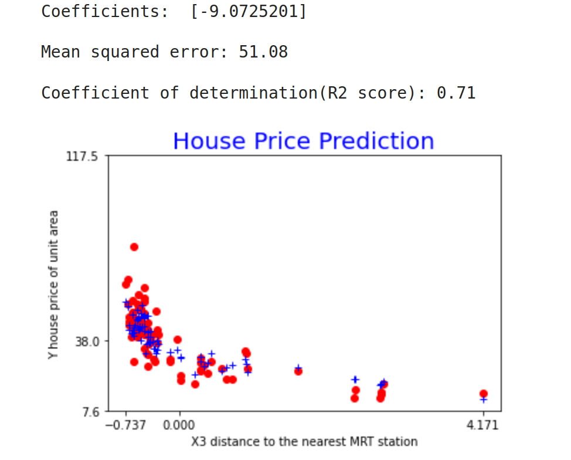
RIDGE REGRESSION
from sklearn.linear_model import Ridge
reg = Ridge(alpha=.5)
reg.fit(x_train,y_train)
y_pred = reg.predict(x_test)
print('Coefficients: ', reg.coef_, '\n')
print('intercept_: ', reg.intercept_, '\n')
#con GridSearchCV calcolare alpha migliore
plt.scatter(x_test,y_test, color= color )
plt.plot(x_test, y_pred, 'b-' , linewidth=1)
plt.title('House Price Prediction', fontdict=title )
plt.xticks([x_test.min(),x_test.mean(),x_test.max()])
plt.yticks([y.min(),y.mean(),y.max()])
plt.xlabel(input)
plt.ylabel(data.columns[-1])
plt.show()
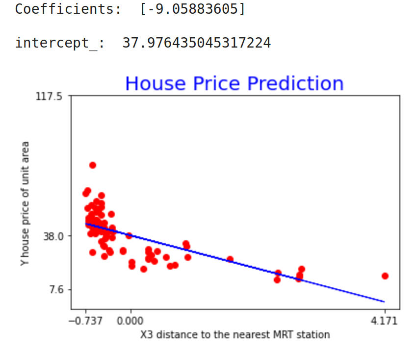
LASSO REGRESSION
from sklearn.linear_model import LassoCV
reg = LassoCV(cv=10, random_state=0).fit(x_train, y_train)
reg.score(x_train,y_train)
y_pred = reg.predict(x_test)
print('Coefficients: ', reg.coef_, '\n')
model = 'LassoCV'
plt.scatter(x_test,y_test, color= color )
plt.plot(x_test, y_pred, 'b-' , linewidth=1)
plt.title('House Price Prediction %s' % model, fontdict=title )
plt.xticks([x_test.min(),x_test.mean(),x_test.max()])
plt.yticks([y.min(),y.mean(),y.max()])
plt.xlabel(input)
plt.ylabel(data.columns[-1])
plt.show()
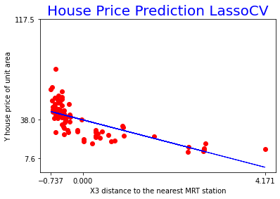
BAYESIANRIDGE REGRESSION
reg = linear_model.BayesianRidge()
reg.fit(x_train, y_train)
print('Coefficients: ', reg.coef_, '\n')
y_pred = reg.predict(x_test)
model = 'BayesianRidge'
plt.scatter(x_test,y_test, color= color )
plt.plot(x_test, y_pred, 'b-' , linewidth=1)
plt.title('House Price Prediction %s' % model, fontdict=title )
plt.xticks([x_test.min(),x_test.mean(),x_test.max()])
plt.yticks([y.min(),y.mean(),y.max()])
plt.xlabel(input)
plt.ylabel(data.columns[-1])
plt.show()
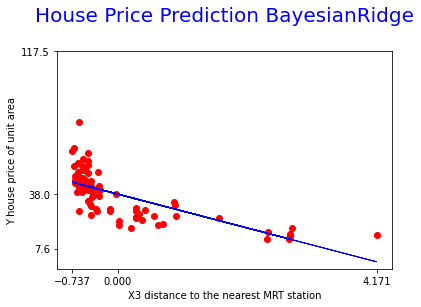
SGD REGRESSION
from sklearn.linear_model import SGDRegressor
sgd = SGDRegressor()
sgd.fit(x_train,y_train)
print('Coefficients: ', sgd.coef_, '\n')
y_pred = reg.predict(x_test)
model = 'SGDRegressor'
plt.scatter(x_test,y_test, color= color )
plt.plot(x_test, y_pred, 'b-' , linewidth=1)
plt.title('House Price Prediction %s' % model, fontdict=title )
plt.xticks([x_test.min(),x_test.mean(),x_test.max()])
plt.yticks([y.min(),y.mean(),y.max()])
plt.xlabel(input)
plt.ylabel(data.columns[-1])
plt.show()
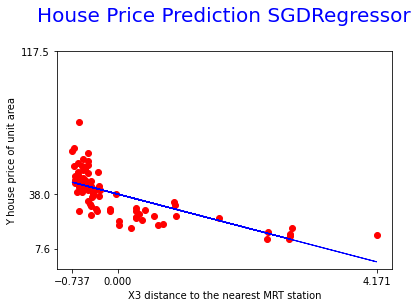
SUPPORT VECTOR MACHINE REGRESSION - LINEAR / RBF / POLINOMIAL
from sklearn.svm import SVR
# Fit regression model
svrL = SVR(kernel='linear', C=100, gamma='auto')
svrK = SVR(kernel='rbf', C=100, gamma=0.1, epsilon=.1)
svrP = SVR(kernel='poly', C=100, gamma='auto', degree=3, epsilon=.1, coef0=1)
def plotSvr(model, svr):
fig, axes = plt.subplots(nrows=1, ncols=1, figsize=(12, 10), sharey=True)
axes.plot(x_test, svr.fit(x_train, y_train).predict(x_test), 'bo' ,color='red', lw=1, label='{} predicted '.format( model ))
axes.scatter(x_train, y_train, facecolor="None",
edgecolor='black', s=40,
label='{} training set '.format( model))
axes.legend(loc='upper center', bbox_to_anchor=(0.5, 1.1),
ncol=1, fancybox=True, shadow=True)
fig.text(0.5, 0.04, input, ha='center', va='center')
fig.text(0.06, 0.5, data.columns[-1], ha='center', va='center', rotation='vertical')
fig.suptitle("House Price Prediction with Support Vector Regression " + model , fontsize=16)
plt.show()
plotSvr('linear', svrL)
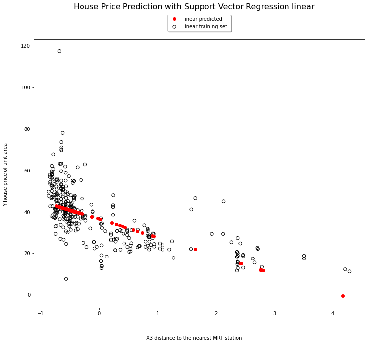
plotSvr('rbf', svrK)
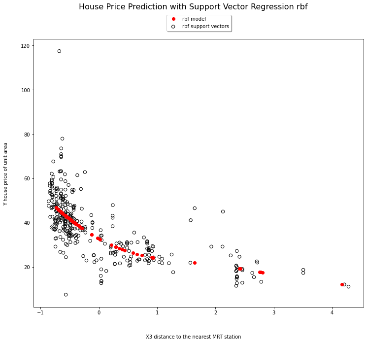
plotSvr('Polinomial', svrP)
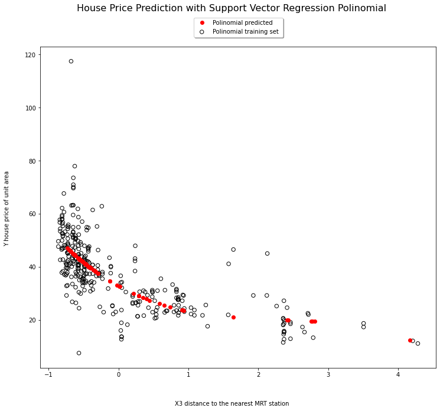
KNN REGRESSION
from sklearn.neighbors import KNeighborsRegressor
knn = KNeighborsRegressor(n_neighbors = 5, weights='uniform')
knn = KNeighborsRegressor(n_neighbors = 5, weights='distance')
knn.fit(x_train,y_train)
print('Coefficients: ', knn.metric_params, '\n')
y_pred = knn.predict(x_test)
model = 'KNN'
plt.scatter(x_test,y_test, color= 'red' ,label='data')
plt.plot(x_test, y_pred, 'or', label='prediction' ,color='green')
plt.title('House Price Prediction %s' % model , fontdict=title , pad=30)
plt.xticks([x_test.min(),x_test.mean(),x_test.max()])
plt.yticks([y.min(),y.mean(),y.max()])
plt.xlabel(input)
plt.ylabel(data.columns[-1])
plt.tight_layout()
plt.show()
# in rosso dati reali
# in verdi dati predetti
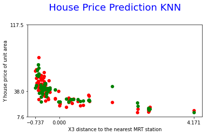
DECISION TREE REGRESSION
2 esecuzioni, una con max_depth a 2 e l'altra a 5 e nel grafico vediamo
training data in rosso, previsione max_depth=2 in giallo e l'altro in blu
from sklearn.tree import DecisionTreeRegressor
reg1 = DecisionTreeRegressor(max_depth=2)
reg2 = DecisionTreeRegressor(max_depth=5)
reg1.fit(x_train, y_train)
reg2.fit(x_train, y_train)
y1 = reg1.predict(x_test)
y2 = reg2.predict(x_test)
model ='DecisionTreeRegressor'
plt.scatter(x_train,y_train, color= 'red' ,label='data')
plt.plot(x_test, y1, 'or', label='prediction1' ,color='yellow')
plt.plot(x_test, y2, 'or', label='prediction2' ,color='blue')
plt.title('House Price Prediction %s' % model , fontdict=title , pad=30)
plt.xticks([x_test.min(),x_test.mean(),x_test.max()])
plt.yticks([y.min(),y.mean(),y.max()])
plt.xlabel(input)
plt.ylabel(data.columns[-1])
plt.tight_layout()
plt.show()
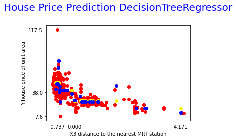
ENSEMBLE - BAGGING REGRESSION
from sklearn.svm import SVR
from sklearn.ensemble import BaggingRegressor
reg = BaggingRegressor(base_estimator=SVR(), n_estimators=10, random_state=0).fit(x_train, y_train)
y_pred = reg.predict(x_test)
model = 'BaggingRegressor'
plt.scatter(x_test,y_pred, marker = 'o')
plt.plot(x_test, y_test, 'r+')
plt.title('House Price Prediction %s' % model , fontdict=title , pad=30)
plt.xticks([x_test.min(),x_test.mean(),x_test.max()])
plt.yticks([y.min(),y.mean(),y.max()])
plt.xlabel(input)
plt.ylabel(data.columns[-1])
plt.show()
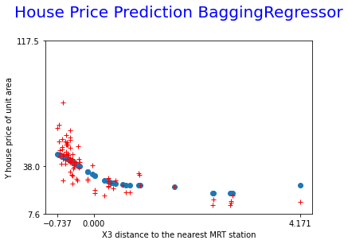
ENSEMBLE - RANDOM FOREST REGRESSION
from sklearn.ensemble import RandomForestRegressor
reg = RandomForestRegressor(max_depth=2, random_state=0).fit(x_train, y_train)
y_pred = reg.predict(x_test)
model = 'RandomForestRegressor'
plt.scatter(x_test,y_pred, marker = 'o')
plt.plot(x_test, y_test, 'r+')
plt.title('House Price Prediction %s' % model , fontdict=title , pad=30)
plt.xticks([x_test.min(),x_test.mean(),x_test.max()])
plt.yticks([y.min(),y.mean(),y.max()])
plt.xlabel(input)
plt.ylabel(data.columns[-1])
plt.show()
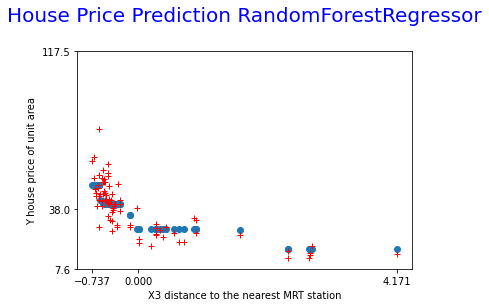
ENSEMBLE - ADABOOST REGRESSION
from sklearn.ensemble import AdaBoostRegressor
reg = AdaBoostRegressor(random_state=0, n_estimators=100).fit(x_train, y_train)
y_pred = reg.predict(x_test)
model = 'AdaBoostRegressor'
plt.scatter(x_test,y_pred, marker = 'o')
plt.plot(x_test, y_test, 'r+')
plt.title('House Price Prediction %s' % model , fontdict=title , pad=30)
plt.xticks([x_test.min(),x_test.mean(),x_test.max()])
plt.yticks([y.min(),y.mean(),y.max()])
plt.xlabel(input)
plt.ylabel(data.columns[-1])
plt.show()
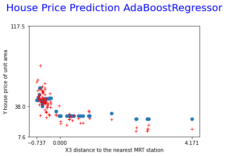
ENSEMBLE - DECISION TREE vs ADABOOST CON DECISIO TREE
from sklearn.tree import DecisionTreeRegressor
from sklearn.ensemble import AdaBoostRegressor
reg1 = DecisionTreeRegressor(max_depth=4)
reg2 = AdaBoostRegressor(DecisionTreeRegressor(max_depth=4), n_estimators=100, random_state=42)
reg1.fit(x_train, y_train)
reg2.fit(x_train, y_train)
# Predict
y1 = reg1.predict(x_test)
y2 = reg2.predict(x_test)
model = 'Decision Tree Regression with AdaBoost'
# Plot the results
plt.figure()
plt.scatter(x_train, y_train, c="k", label="training")
plt.plot(x_test, y1, 'bo' , c="g", label="Decision Tree", linewidth=1)
plt.plot(x_test, y2, 'ro', c="r", label="Decision Tree - AdaBoost", linewidth=1)
plt.title('House Price Prediction %s' % model , fontdict=title , pad=30)
plt.xticks([x_test.min(),x_test.mean(),x_test.max()])
plt.yticks([y.min(),y.mean(),y.max()])
plt.xlabel(input)
plt.ylabel(data.columns[-1])
plt.legend()
plt.show()
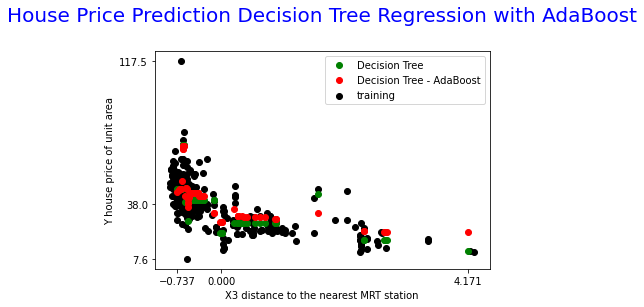
ENSEMBLE - GRADIENT BOOSTING REGRESSION
from sklearn.ensemble import GradientBoostingRegressor
reg = GradientBoostingRegressor(random_state=0).fit(x_train, y_train)
y_pred = reg.predict(x_test)
model = 'GradientBoostingRegressor'
plt.scatter(x_test,y_pred, marker = 'o')
plt.plot(x_test, y_test, 'r+')
plt.title('House Price Prediction %s' % model , fontdict=title , pad=30)
plt.xticks([x_test.min(),x_test.mean(),x_test.max()])
plt.yticks([y.min(),y.mean(),y.max()])
plt.xlabel(input)
plt.ylabel(data.columns[-1])
plt.show()
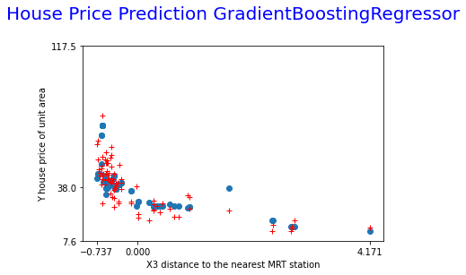
ENSEMBLE - HIST GRADIENT BOOSTING REGRESSION - sperimentale
from sklearn.experimental import enable_hist_gradient_boosting
from sklearn.ensemble import HistGradientBoostingRegressor
reg = HistGradientBoostingRegressor().fit(x_train, y_train)
reg.score(x_train, y_train)
y_pred = reg.predict(x_test)
model = 'HistGradientBoostingRegressor'
plt.scatter(x_test,y_pred, marker = 'o')
plt.plot(x_test, y_test, 'r+')
plt.title('House Price Prediction %s' % model , fontdict=title , pad=30)
plt.xticks([x_test.min(),x_test.mean(),x_test.max()])
plt.yticks([y.min(),y.mean(),y.max()])
plt.xlabel(input)
plt.ylabel(data.columns[-1])
plt.show()
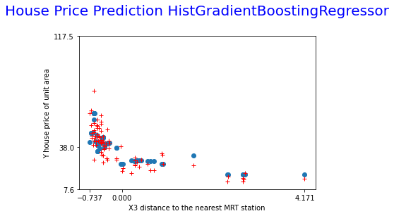
ENSEMBLE - VOTING REGRESSION
Con Voting regression otteniamo una media degli altri regressor utilizzati
from sklearn.ensemble import GradientBoostingRegressor
from sklearn.ensemble import RandomForestRegressor
from sklearn.linear_model import LinearRegression
from sklearn.ensemble import VotingRegressor
reg1 = GradientBoostingRegressor().fit(x_train, y_train)
reg2 = RandomForestRegressor().fit(x_train, y_train)
reg3 = LinearRegression().fit(x_train, y_train)
Vreg = VotingRegressor(estimators=[('gb', reg1), ('rf', reg2), ('lr', reg3)]).fit(x_train, y_train)
pred1 = reg1.predict(x_test)
pred2 = reg2.predict(x_test)
pred3 = reg3.predict(x_test)
pred4 = Vreg.predict(x_test)
model = 'VotingRegressor'
plt.figure()
plt.plot(pred1, 'g*', c="g", label="GradientBoostingRegressor")
plt.plot(pred2, 'r+', c="r", label="RandomForestRegressor")
plt.plot(pred3, 'yo', label="LinearRegression")
plt.plot(pred4, 'bo', label="VotingRegressor")
plt.legend(loc="best")
plt.title('House Price Prediction %s' % model , fontdict=title , pad=30)
plt.xticks([x_test.min(),x_test.mean(),x_test.max()])
plt.yticks([y.min(),y.mean(),y.max()])
plt.xlabel(input)
plt.ylabel(data.columns[-1])
plt.legend(loc="best")
plt.show()
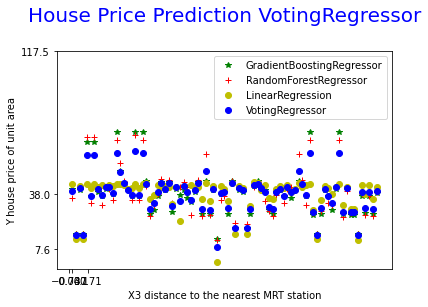
NEURAL NETWORK REGRESSION
from sklearn.neural_network import MLPRegressor
reg = MLPRegressor(random_state=1, max_iter=10000).fit(x_train, y_train)
y_pred = reg.predict(x_test)
model = 'MLPRegressor'
plt.plot(x_test,y_pred, 'g*', label="Predicted")
plt.plot(x_test, y_test, 'r+', label="Test")
plt.title('House Price Prediction %s' % model , fontdict=title , pad=30)
plt.xticks([x_test.min(),x_test.mean(),x_test.max()])
plt.yticks([y.min(),y.mean(),y.max()])
plt.xlabel(input)
plt.ylabel(data.columns[-1])
plt.legend(loc="best")
plt.show()
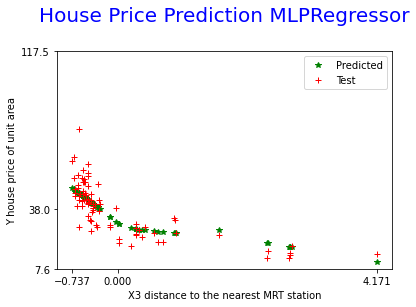